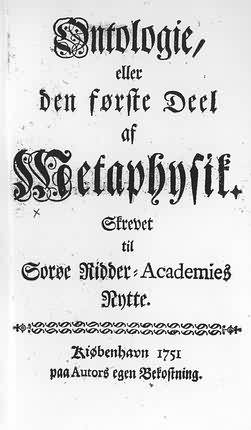
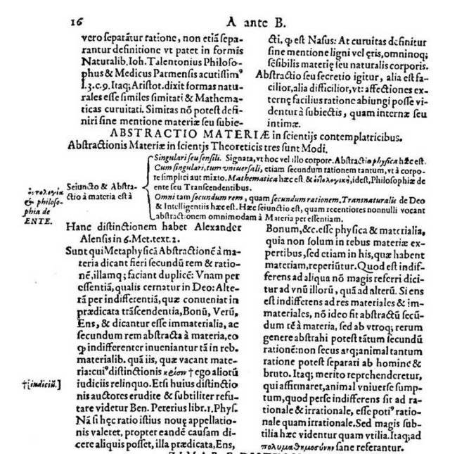

History of Ontology from Suárez to Kant (1597-1781)
Birth of a New Science
INTRODUCTION
To begin with, we want to state that ontology should be seen only as an interdiscipline involving both philosophy and science. It is a discipline which points out the problems of the foundations of the sciences as well as the borderline questions, and which further attempts to solve these problems and questions. Ontology is not a discipline which exists separately and independently from all the other scientific disciplines and also from other branches of philosophy. Rather, ontology derives the general structure of the world; it obtains the structure of the world as it really is from knowledge embodied in other disciplines. If one examines the history of philosophy one sees that ontology has never solved or attempted to solve the questions about the structures of our world independently, apart from the other philosophical disciplines or apart from the sciences. As is expressed by this symposium's topic, Language and Ontology, ontology has derived the world's structure from other disciplines which describe reality, and has thus relied upon the languages of other disciplines. A common belief is that this derivation of the world's most general structures from the knowledge of other disciplines is ontology's only task. But now the belief is that in doing ontology, one always selects the most important and most general laws from among all the laws which the various disciplines have to offer at any given time. Further, the ontologist interprets and generalizes those laws and must endeavor to establish certain of them as the most fundamental and general structures of our world.
If ontology is a discipline which uses knowledge from various other disciplines then it is obvious that, in the course of the history of philosophy, ontology must have developed in a most dramatic fashion. If we look at the actual history of ontology we find confirmation of our claim. Ontology mirrors, so to speak, the level of our knowledge of the world at any given time. For instance, Plato and the Platonists have assumed that one could derive our world's most general empirical structures from an ideal world of Platonic Forms. Of this world of Forms, it is said that one can experience it intuitively and that its existence has to be presupposed a priori. For this derivation, one needs only two relations, methexis and parousia. Methexis means "participation" or what we would call "representation"; parousia means "manifestation" (of the ideas in the world) or what we would call "interpretation". These ontological procedures are explained in Plato's Parmenides.
For Aristotle, the main task of philosophy was not to perceive the world of ideas, but to experience the empirical world and acquire knowledge about it (Metaphysics, Chapter 9). He created the first system of ontology in the form of an ontology of substances. Aristotle's search for the world's true structures is interestingly opposed to Plato's. For Aristotle the general properties of things, that is, those properties of things which constitute their invariant form, have to be found through a cognitive process. These general properties of things are universal structures or patterns. These universal patterns are to be defined and axiomatized. For this task one calls on logic for help. The end result is that universals become generally comprehensible.
Here one may ask, as Porphyry did, what universals really are. The answers that have been proposed are numerous. They include: Platonic ideas, substances residing in things, concepts or representations in the human mind (conceptualism), terms or predicates contained in our language (nominalism), and mathematical-theoretical constructs in the languages of present day theories. The question about the very nature of universals (general structures) has occupied philosophy and the sciences up to the present day as one can see in reading Heisenberg's dialogues with Schrödinger where this question is discussed at length.
In the Middle Ages the concern with universals continued. Various elaborate systems evolved, including, importantly, varieties of conceptualism and nominalism. A decisive turn in the history of ontology is connected with the writings of Goclenius, Wolff, and Leibniz. Goclenius needs to be mentioned for he is credited with the first use of the term 'ontology'. Like all ontologies, so also Wolff's, has to be made dependent upon the level of knowledge existing at his time. Knowledge for Wolff is logical knowledge. He established the interdisciplinary character of his ontology by deriving the most general laws of nature and of all things from the principles of a logic derived from Leibniz. According to Wolff, it is one of the basic ontological structures of everything that exists, that the principle of non-contradiction and the principle of sufficient reason are valid in all merely possible worlds in addition to the real world.
Kant rejected Wolff's logic as metaphysical and Platonistic. Therefore Kant rejected also Wolff's ontology. Instead of traditional logic, Kant introduced his own transcendental logic. This transcendental logic may be seen as a cognitively oriented method which is founded on concepts. If one wants to gain knowledge, then, according to Kant, only those categories (or most general concepts) may be used which fulfill certain spatio-temporal conditions when they are applied. These categories are of subjective origin, that is, created by the human mind. It is a scientific theory, namely, Newton's physics, which furnishes the natural laws which are the basis of Kant's ontology. In his epistemology (an "auxiliary discipline" of his ontology which is contained in the Critique of Pure Reason), Kant methodologically explains Newton's physics.
Leibniz's logic stands in the same relationship to Wolff's ontology, as the natural laws of Newton's physics and Kant's own epistemology stands to Kant's ontology. But for Kant it is not the world of things-in-themselves which determines his ontology but the spatio-temporal categorial system of relations of the phenomena. It is important that here ontology can be clearly separated from epistemology. Kant's epistemology is a metatheory of the cognitive presuppositions and methods of classical physics. Kant's categorial ontology derives from natural laws which are supported and confirmed by empirical evidence of the general structures of the world-the classical physical world, as we would say today. With this, ontology became an interdiscipline, since it is here that for the first time in the history of philosophy and science that scientific results were thoroughly (philosophically) generalized. This is also an important point in the development of the ontology of the sciences. The ontology of the sciences has progressed enormously in the twentieth century, since many scientific theories with their specialized, cognitively oriented languages and with their specialized mathematical methods did not originate before the twentieth century. Up to now, the ontology of the sciences is the last chapter of the history of ontology.
After Kant, ontology developed in several directions. Ontology of the sciences evolved in Neo-Kantianism, Positivism and Neo-positivism, the philosophy of the Vienna Circle, and in contemporary philosophy of science. On the other side stands phenomenological ontology. Phenomenological ontology expanded Kant's phenomenological "reduction" of the world. Its climax is Husserl's phenomenology in which the world itself becomes the (world) phenomenon. The world's basic structures exist exactly in that way in which they are experienced (phenomenologically) by human beings. The construction and the structure of the world "happen" in man's pure intentional consciousness vis-à-vis reality. According to Husserl, mathematics and logic also participate in the constitution of the world out of the phenomena. This constitution has a semantical character but happens, nevertheless, without language. Heidegger's fundamental ontology, on the other hand, speaks of an anti-logical and anti-scientific basic experience, which is said to be paramount to all scientific knowledge.
The next decisive step in the development of ontology was the result of another development, which had reached its climax in the twentieth century, the development of formal logic. Formal logic, and, in union with it, analytic philosophy, often show the tendency to dissolve epistemology into syntax and semantics, and even pragmatics. The syntactical semantic functions, the reference relation, etc., could, in turn, be based upon the respective functions of language, be it ordinary language or the language of the sciences. Wittgenstein's reduction of thinking to the linguistic medium became an object of a philosophical position whose task was to explain and clarify language. As a result, the ontology of the sciences acquires features which are best characterized by "regional linguistic ontology". An important result of Wittgenstein's reduction of thinking to language was the dissolution of conceptualistic ontology."
From: Werner Leinfellner, Eric Kraemer and Jeffrey Schank (eds.),
Language and Ontology. Proceedings of the Sixth International Wittgenstein Symposium. 23th to 30th August 1981 Kirchberg am Wechsel (Austria),
Wien, Hölder-Pichler-Tempsky, 1982, Preface by The Editors, pp. 18-20.
THE ORIGIN OF A NEW TERM: "ONTOLOGIA"
Until 2003 the first appearance of the Latin word "ontologia" was known in two works published in 1613:
Rudolf Göckel (1547-1628) Latin Rudolf Goclenius, Professor of Logic in the University of Marburg: in his
Lexicon philosophicum quo tanquam clave philosophiae fores aperiuntur, informatum opera et studio Rodolphi Goclenii, Frankfurt (reprinted by Georg Olms, second edition 1980) XII, 1143 pages) on the left margin of abstractio (the term is written in Greek);
Jacob Lorhard (1561-1609) Latin Jacobo Lorhardo or Jacobus Lorhardus, Professor at the University of St. Gallen (Switzerland) in his Theatrum philosophicum, Basilea, SECOND edition.
Göckel's work was well known, but Lorhard's
Theatrum philosophicum was first discovered by Joseph S. Freedman in the second edition of his Deutsche Schulphilosophie im Reformationszeitalter (1500-1650): ein Handbuch für den Hochschulunterricht, Münster, MAKS, 1985, and cited by Jean-François Courtine in his masterpiece Suárez et le système de la métaphysique, Paris, Presses Universitaires de France, 1990, p. 410 n. 6.
Lorhard was an unknown author and the only reference I found to him is in the
Syllabus auctorum, Vol. 9 of the Bibliographia Philosophica Vetus . Repertorium generale systematicum operum philosophicorum usque ad annum MDCCC typis impressorum by Wilhelm Risse , Zürich - New York, Georg Olms, 1998:
"Lorhardus, Jacobus (fl. 1597), praeceptor Durlaci, rector S. Galli"
Wilhelm Risse 's outstanding work contains a bibliography of the published titles on philosophy up to 1800 (about 18,000 titles!); I tried to find the First edition of Lorhard's work, which was unknown.
In Vol. II, - "Logica" of Risse's work, Jacobus Lorhardus is cited twice: year 1597 and year 1606 (references are to the year of publication).
1597:
Liber de adeptione veri necessarii, seu apodictici..., Tubingae, 1598, (p. 217)
The title of the second work puzzled me:
Ogdoas means "composed of eight elements" and the title cited only three disciplines.
May 16, 2003, I discovered that this work was the first edition of the
Theatrum philosophicum and that the word "ontologiae" appeared in the complete title:
The first occurence of "ontology" (in German:
Ontologie) in a dictionary of philosophy can be found in the first philosophical dictionary published in a modern language, the Philosophisches Lexicon by Johann Georg Walch (1693-1775): the first edition was published in 1726 (the second improved edition of 1733 has been reprinted in three volumes by Thoemmes in 2001).
July 15, 2005: I received new information about Jacob Lorhard from Peter Øhrstrøm, Institut for Kommunikation, Aalborg Universitet:
Jacob Lorhard was born in 1561 in Münsingen in South Germany. In 1603 he became "Rektor des Gymnasiums" in the protestant city of St. Gallen. In 1606 he published his book Ogdoas Scholastica, on the frontispiece of which the word "ontologia" appears - probably for the first time ever in a book. "Ontologia" is used synonymously with "Metaphysica".
In 1607, i.e., the year after the publication of Ogdoas Scholastica, Lorhard received a calling from Landgraf Mortiz von Hessen to become professor of theology in Marburg. At that time Rudolph Göckel (1547-1628) was also professor in Marburg in logic, ethics, and mathematics. It seems to be a likely assumption that Lorhard and Göckel met one or several times during 1607 and that they shared some of their findings with each other. In this way the sources suggest that Göckel during 1607 may have learned about Lorhard's new term "ontologia" not only from reading Ogdoas Scholastica but also from personal conversations with Lorhard. For some reason, however, his stay in Marburg became very short and after less than a year he returned to his former position in St. Gallen. Lorhard died on 19 May, 1609. Later, in 1613, Lorhard's book was printed in a second edition under the title Theatrum Philosophicum. However, in this new edition the word "ontologia" has disappeared from the front cover but has been maintained inside the book. In 1613, however, the term is also found in Rudolph Göckel's Lexicon Philosophicum. Here the word "ontologia" is only mentioned briefly as follows: ontologia, philosophia de ente (ontology, the philosophy of Being). It is very likely that Göckel included this term in his own writings due to inspiration from Lorhard.
October 27, 2006: Dr. Marco Lamanna, Bari University (Italy) send me some important details:
In July 2006 I had the opportunity to consult a copy of the Ogdoas Scholastica (1606) of Lorhard in the University Library in San Marino. The neologism ontologia appears four times in the course of the work. On three occasions it occurs in the genitive singular (Ontologiae): on the frontispiece, in the title of the section on metaphysics, and at the end of this same section. Only on one occasion (in the dedicatory letter) does the word appear in the accusative case (Ontologiam). I was subsequently able to consult Lorhard's Theatrum Philosophicum at the Herzog August Bibliothek in Wolfenbüttel. This work, the second (amplified) edition of the Ogdoas Scholastica, and appeared posthumously at Basel in 1613. The Theatrum Philosophicum is made up of twelve parts (continens Grammaticen Latinam, Graecam, et Hebraeam, Logicen, Rhetoricen, Arithmeticen, Geometriam, Musicen, Astronomicen, Ethicen, Physicen, Metaphysicen seu Ontologiam). The parts that appear here in addition to the material in the
Ogdoas are the sections on Hebrew grammar, arithmetic, geometry and music. In the dedicatory letter of the Theatrum Philosophicum, Lorhardus writes "hancque Dodecada Scholasticam confeci" (i.e. a work of twelve parts), in contrast to what he had written in 1606: "hancque Ogodoada Scholasticam confeci" (i.e. a work of eight parts).
In September 2006 I confirmed that the part of the work dealing with metaphysics (Metaphysices seu Ontologiae Diagraphe) is identical in the Ogdoas and in the Theatrum, and also discovered that Lorhardus was not the author of this chapter. In fact, what Lorhard did was to create a diagrammatic representation, in the Ramist tradition, of the Metaphysicae Systema Methodicum of Clemens Timpler, which ran through nine editions, including some unauthorized imprints (Steinfurt 1604, Lich 1604, Hanau 1606, Frankfurt a.M. 1607, Marburg 1607, Hanau 1608, Frankfurt a.M. 1612, Hanau 1612, Hanau 1616).
[See: Joseph S. Freedman,
European Academic Philosophy in the Late Sixteenth and Early Seventeenth Centuries. The life, significance and philosophy of Clemens Timpler (1563/4-1624). Hildesheim: Georg Olms 1988].
Since Lorhard finished working on his Ogdoas Scholastica (the dedicatory letter was dated 24 February 1606), he could presumably only have had the 1604 editions of Timpler's work to consult. Lorhard faithfully repeats most of the theorems with which Timpler had begun each of his chapters, except for a few minor differences, explicable by the fact that Lorhard was adapting Timpler's work to diagrammatic form and that the Ogdoas was a book for studiosis adolescentibus of the Gymnasium in Sankt Gallen where he was rector. The only important difference is that Lorhard introduces a new word, not found in Timpler, "Ontologia", by which he means all metaphysics. In the title page of the
Ogdoas and in the title of his Ramistic diagram, Lorhard equates the two words with the phrases "Metaphysices, seu Ontologiae", and "Metaphysicae seu Ontologiae Diagraphe" respectively. (A similar phrase also occurs in the dedicatory letter).
I have also found another copy of the Ogdoas Scholastica (1606), in the Universitäts- und Landesbibliothek Sachsen-Anhalt in Halle, in addition to the four copies indicated on the website
Ontology. Theory and History."
April 27, 2011: A new update on Lorhard from M. Lamanna:
Latest Findings on Jakob Lorhard and the Rise of the Term Ontology
My latest finding at the Universitätsbibliothek Marburg of the Lysis duorum sophismatum pro omnipraesentia carnis Christi in Eius Persona by Jakob Lorhard, gives us the definitive confirmation of the presence of Lorhard in Marburg in 1607.
The work regards a public discussion held by Lorhard at the Faculty of Theology of Marburg’s Philipps-Universität in 1607. It contains two dedications: the first to Hermann Vultejus (1565-1634), professor of law and chancellor at University of Marburg, and the second to Gregor Schönfeld (1559-1628), professor of theology and superintendent in Hessen.
In the work, Lorhard for the most part discusses the theme of the omnipresence of Christ in the world, contrasting every pantheistic degeneration.
Lorhard’s “exoteric” approach is evident. He argues only on the basis of the literal exegesis of the Sacred Scripture, as evident also in his Kurtzer begriff Dess wahren ungefälschten Christenthumbs, completed on his return from Marburg to St. Gallen and published posthumously in 1610.
Probably, the unsuccess of his appointment as professor of theology in Marburg was caused by the distance of Lorhard’s theology from the esoteric and apocalyptic researches that were being affirmed in Marburg and at the court of the prince Moritz of Hessen in Kassel, for example with a theologian like Raphael Egli (1559-1622). Perhaps this is the reason that led his return to St. Gallen from Marburg, just four months later, in semptember 1607.
The publication in Marburg of the Lysis not only confirms the indications contained in the biography of Lorhard by Georg Leonhardt Hartmann, but also confirms above all the hypothesis formulated by Peter Øhrstrøm, Jan Andersen, Henrik Schaerfe (What has happened to Ontology, in F. Dau / M.-L, Mugnier, G. Stumme (eds.), Springer Verlag, Berlin-Heidelberg 2005): Rudoph Göckel most probably met Lorhard in Marburg between may and September of 1607, and from Lorhard thus renewed the neologism
"ontology". “
THE FIRST OCCURRENCE OF "ONTOLOGY" IN ENGLISH
According to the last printed edition of the Oxford English Dictionary (Second edition, 1989) the first occurrence of "ontology" was in An Universal Etymological English Dictionary (1721) by Nathaniel Bailey (born ? - died 1742): "An Account of Being in the Abstract."
Isaac Watts (1674-1748) in his Logic, or the Right Use of Reason in the Enquiry after Truth. With a Variety of Rules to Guard against Error, in the Affairs of Religion and Human Life, as well as in the Sciences (1724) wrote: "In order to make due enquiries into all these, and many other particulars which go towards the complete and comprehensive idea of any being, the science of ontology is exceeding necessary. This is what was wont to be called the first part of metaphysics in the peripatetic schools" I. VI. 9.
The first book in English with "ontology" in the title is: Isaac Watts - "Philosophical Essays on Various Subjects, (...); With some Remark s on Mr. Locke's Essay on the Human Understanding. To which is subjoined a brief Scheme of Ontology, or the Science of Being in general with its Affections" (1733).
The on-line Draft Revision
of the Oxford English Dictionary (September 2008) give as first occurrence (discovered by Fred R. Shapiro in a message to the Linguist List
(December 25, 2005): Gideon Harvey (1636/7-1702): Archelogia philosophica nova; or, New principles of Philosophy. Containing Philosophy in general, Metaphysicks or Ontology, Dynamilogy or a Discourse of Power, Religio Philosophi or Natural Theology, Physicks or Natural philosophy - London, Thomson, 1663, Book II, Chapter One, pp. 17-18: "It is [Metaphysics] called also the First Philosophy, from its nearest approximation to Philosophy, its most proper Denomination is Ontology, or a Discourse of a Being."
THE FIRST OCCURRENCE OF "ONTOLOGIA" IN A WORK PUBLISHED IN GERMAN
The poet Christian Weise (1642 - 1708) in a novel published in German in 1675 with the pseudonym Catharinum Civilem made use of the Latin "ontologia":
Denn durch die PHILOSOPHIE. wird allhier nicht eine DISPUTATION aus der ONTOLOGIA verstanden sondern die rechte PHILOSOPHIA PRACTICA, welche sich in dem Lichte der Natur und in denen Menschlichen Verrichtungen umbsiehet und dannen hero einen festen Grund der unverfälschten Klugheit gestellet hat." (Chapter VIII, p. 181)
Christian Weise,
Die drey Klügsten Leute in der gantzen Welt, Leipzig, J. Fritzsch, 1675 (Critical edition in:
Sämtliche Werke, XVIII, Berlin, de Gruyter, 2005, p. 112)
THE FIRST OCCURRENCE OF "ONTOLOGIE" IN DENMARK
February, 24th 2004: I received this message from Dr. Jan Andersen (research assistant with Professor Peter Oehrstroem at the Department of Communication. Aalborg University, Denmark) on the origin of "ontology" in Denmark:
The Danish-Norwegian author Jens Kraft (1720-1765) published a text book in Danish titled 'Ontologie' as a part of his 'Metaphysik' in 1751. When the book was published Kraft was a professor (mathematics and philosophy) at the Soroe University. 'Ontologie' was meant as a text book aimed at the students there. 'Ontologie' was a part of the larger work 'Metaphysik' which also contained 'Cosmologie' (1752), 'Psychologie' (1752) and 'Naturlig Theologie' (1753). Kraft was a dedicated admirer of Christian Wolff and had (before writing the book) attended Wolff´s lectures at Halle University, Germany, but, as opposed to Wolff, Kraft was an adherent of Newtonian theory, and is considered to be the prime spokesman and the introductor of Newton to Denmark and Norway (the two countries being one united kingdom at the time). Kraft is mentioned in the Dictionary of Scientific Biography (Charles Coulston Gillispie ed.) vol. VII, New York 1973, Charles Scribner's Sons, p.490 in an article written by Kurt Moeller Pedersen. Kraft´s book can be found at the Statsbiblioteket in Aarhus, Denmark."

Jens Kraft,
Ontologie', frontispiece of the Book.
Complete list of the texts with the term "Ontologia" from Lorhard to Clauberg (1606-1664)
For the dissertations by Matthias Lobertantz, Johann Christophorus Segers, Johann Flottwel, Christian Heinrich Mildehaupt, that are almost unknown, I give the reference to the Libraries where the texts can be found.
Jacob Lorhard.
Ogdoas Scholastica, continens Diagraphen Typicam artium: Grammatices (Latinae, Graecae), Logices, Rhetorices, Astronomices, Ethices, Physices, Metaphysices, seu Ontologiae.
St. Gallen: 1606. According to the Bibliographia Philosophica Vetus, Pars 1. Philosophia generalis, by Wilhelm Risse, the volume is available only in two German Libraries: the Staatsbibliothek Augsburg and the Lüneburg Ratsbibliotek, but I discovered a third copy, not cited by Risse, in the Kantonsbibliothek St. Gallen, Switzerland; from 1998, a fourth copy is available in the "Fondo Young sulla memoria e la mnemotecnica" (Morris N. Young's Fund on memory and mnemotechnics) at the Library of the San Marino University; a fifth copy was discovered by Marco Lamanna University of Bari - Italy in the Universitäts- und Landesbibliothek Sachsen-Anhalt in Halle.
Jacob Lorhard.
Theatrum philosophicum, continens Grammaticen Latinam, Graecam, et Hebraeam, Logicen, Rhetoricen, Arithmeticen, Geometriam, Musicen, Astronomicen, Ethicen, Physicen, Metaphysicen seu Ontologiam.
Basilea: 1613. Second, expanded edition of Lorhard (1606).
Lobetantz Matthias.
Disputatio ontologica de bono et malo.
Rostock: 1613. Dissertation. (Advisor: Andreas Hojer). A copy is available at the Bayerische StaatsBibliothek - Signature: 4 Diss. 2968#Beibd.24
Rodolphus Goclenius.
Lexicon philosophicum quo tanquam clave philosophiae fores aperiuntur.
Frankfurt: 1613. s.v. abstractio
p. 16. Reprint: Hildesheim, Georg Olms, 1964 (with the Lexicon philosophicum Graecum).
Johann Heinrich Alsted.
Cursus philosophici encyclopaedia libris XXVII : complectens universae philosophiae methodum, serie praeceptorum, regularum & commentariorum perpetua.
Herborn: 1620. Two volumes; see vol. I p. 149. Vol. II with the title: Septem artes liberales, quae constituunt tertium encyclopediae philosophicae tomum. Reprint of the 1630 edition:
Encyclopaedia. Septem tomis distincta
- Stuttgart, Frommann-Holzboog, 1989.
Liborius Capsius.
Sapientia (vulgo Metaphysica) idealis. Pro acquirenda Philosopho-Theologica akribeia.
Erfurt: 1627. See p. 28.
Abraham Calov.
Metaphysica Divina, Pars Generalis Praecognita II.
Rostock: 1636. See p. 4.
Johannes Christophorus Segers.
De Ontologia Generali.
Erfurt: 1639. Dissertation. (Advisor: Liborius Capsius). Available at the Universitäts- und Forschungsbibliothek Erfurt / Gotha - Signature: LA. 4 00261 (21)
Johann Flottwel.
Disputatio prima ontologica D.T.O.M.A. et consensu amplissimae Facultatie Philosophicae exercitii et indagandae veritatis.
Regiomonti: Johanni Reusneri 1640. Dissertation. (Advisor: Johann Hund). A microfilm is available at the Bayerische StaatsBibliothek, Signature: Film R 2001.281,NWA-1267
Juan Caramuel y Lobkowitz.
Rationalis et realis philosophia.
Louvain: 1642. See p. 65
Johannes Clauberg.
Elementa philosophiae seu Ontosophia. Scientia prima, de iis quae Deo creaturisque suo modo communiter attribuuntur, distincta partibus quatuor.
Groningen: 1647.
Johannes Clauberg.
Ontosophia nova, quae vulgo Metaphysica, Theologiae, Iurisprudentiae et Philologiae, praesertim Germanicae studiosis accomodata. Accessit Logica contracta, et quae ex ea demonstratur Orthographia Germanica.
Duisburg: 1660.
Johannes Micraelius.
Lexicon philosophicum terminorum philosophis usitatorum (second edition).
Stettin: 1662. Reprinted with an introduction by Lutz Geldsetzer: Düsseldorf, Stern-Verlag Janssen & Co. 1966.
Gideon Harvey.
Archelogia philosophica nova; or, New principles of Philosophy. Containing Philosophy in general, Metaphysicks or Ontology, Dynamilogy or a Discourse of Power, Religio Philosophi or Natural Theology, Physicks or Natural philosophy.
London: Thomson 1663. The first occurrence of "ontology" in English.
Christian Heinrich Mildeheupt.
Dissertatio ontologica de quaestione an conceptus entis sit unus?
Lipsiae: Wittigau 1663. Dissertation. (Advisor: Dietrich von Wida). Dresden Sächsische Landesbibliothe / Staats- und Universitätsbibliothek - Signature: Coll. diss.A.78,30
Johannes Clauberg.
Metaphysica de ente, quae rectius Ontosophia.
Amsterdam: 1664.
A SELECTION OF STUDIES ON THE ORIGINS OF THE LATIN WORD "ONTOLOGIA"
In the prolegomena to his
Elementa philosophiae sive Ontosophiae
(1647), Johannes Clauberg remarks: Since the science which is about God calls itself Theosophy or Theology, it would seem fitting to call Ontosophy or Ontology that science which does not deal with this and that being, as distinct from the others owing to its special name or properties, but with Being in general.
This text may be held, in the present state of historical knowledge, for the birth certificate of ontology as a science conceived after the pattern of theology, yet radically distinct from it, since being qua being is held there as indifferent to all its conceivable determinations.
There is, Clauberg says, a certain science which envisages Being inasmuch as it is Being, that is, inasmuch as it is understood to have a certain common nature or degree of Being, a degree which is to be found in both corporeal and incorporeal beings, in God and in creatures, in each and every singular being according to its own mode. Leibniz will later praise Clauberg for such an undertaking, but he will regret that it had not been a more successful one. The very word "ontology" occurs at least once in an undated fragment of Leibniz, and one can expect accidentally to meet it later in various places, (2) but it is not until 1729 that it finally comes into its own with the Ontologia of Christian Wolff.
From: Etienne Gilson,
Being and Some Philosophers,
Toronto, Pontifical Institute of Mediaeval Studies, 1952 p. 112-113. French edition: L'être et l'essence. Paris, Vrin,1948 (Second revised edition 1962).
C'est un fait que l'Ontologia
de WOLFF constitue une étape importante de l'histoire de la métaphysique, même s'iln'est pas vrai, comme on le dit trop souvent, qu'elle soit la toute première Ontologie. Avant lui déjà, en effet, CLAUBERG avait fait paraître à Amsterdam en 1656 une Metaphysica de ente quae rectius Ontosophia, aliarum Disciplinarum, ipsiusque quoque Jurisprudentiae et Litterarum, studiosis accomodata, car ainsi qu'il le déclare: sicuti...geosofia vel geologia dicitur quae circa Deum occupata est scientia: ita haec, quae non circa hoc vel illud ens speciali nomine insignitum vel proprietate quadam ab aliis distinctum, sed circa ens in genere versatur, non incommode Ontosophia vel Ontologia dici posse videatur (Opera omnia, Amstelodami, 1691 t. I, p. 281). De même, en 1669, le Père Réginald, dominicain, publia un ouvrage réédité à Paris en 1878 et intitulé: Doctrinae Divi Thomae Aquinatis tria principia, cum suis consequentiis, dont la première partie traite de l'être en général sous le titre: De Ontologia, cependant que Jean-Baptiste Du HAMEL, dans sa:
Philosophia vetus et nova ad usum scholae accomodata, in regia Burgundia ohm pertractata, Parisiis, 1678, emploie le mot Ontologia dans le même sens, lorsque, dans le tome III de cet ouvrage, divisant la métaphysique en trois parties, il déclare: In primo quae ad entis ipsius naturam, principia, affectiones et primas velut species pertinent, exsequimur; adeo ut Ontologiam seu entis scientiam hoc tractatu complexamur. Atque haec est prima philosophia aut scientia generalis, ex qua reliquae dimanant (p. 10 et 11 de l'édition de 1687).
Mais ces auteurs ne sont pas les premiers à avoir frayé la voie de l'Ontologie. Le terme même semble avoir fait sa première apparition, tout au moins sous sa forme grecque, dans le
Lexicon philosophicum quo tamquam clave philosophiae fores aperiuntur
de Rudolph GOCLENIUS (Frankfurt, 1613), où l'on peut lire à l'article: abstractio, p. 16, dans la marge:
οντολογα, et philosophia de ente, et dans le corps de l'article:
οντολογα, idest Philophia de ente seu de transcendentibus.

Rudolf Göckel,
Lexicon philosophicum quo tanquam clave philosophiae fores aperiuntur, informatum opera et studio Rodolphi Goclenii, Frankfurt, 1613:
abstractio ('ontologia' is written in Greek).]
C'est encore sous sa forme grecque qu'on le rencontre chez Abraham CALOV qui, dans sa:
Metaphysica divina a principiis eruta, in abstractione entis repraesentata ad S. S. Theologiam applicata, monstrans terminorum et conclusionum transcendentium usum genuinum abusum hereticum constans
(Rostockii, 1636), déclare: Scientia de ente, Metaphysica appellatur communiter a rerum ordine, οντολογα
rectius ab objecto proprio (Scripta philosophica, Lubecae, 1651, p. 145) et qui, tout au long de cet de cet ouvrage, appelle ainsi
οντολογα
la science de l'être; à tel point que sa Metaphysica divina... peut être considérée, dans l'état actuel de nos connaisances, comme la première ontologie. Quoi qu'il en soit, on peut bien dire qu'avec CALOV, l'Ontologie en tant que discipline est déjà née. Et c'est cette science de l'être en général que les scolastiques du XVII siècle se sont plu à ériger en une sorte d'introduction à la philosophie - d'où le nom de philosophie première qu'ils lui donnèrent encore -- et qu'ils réduisirent peu à peu à n'être qu'un vocabulaire ou un lexique philosophique, destiné à servir d'instrument de base à l'enseignement de la métaphysique, grâce à la définition des termes employés par celle-ci, comme nous l'apprennent: Johann Franz BUDDE dans une longue note de son ouvrage:
Isagoge historico-theologica in theologiam universam singulasque ejus partes, Lipsiae, 1727, lib. I, cap. IV, 28, t. I, p. 252-261, et surtout Jacob THOMASIUS dans son:
Historia variae fortunae quant Metaphysica jam sub Aristotele, jam sub Scholasticis, jam sub Recentibus experta est, ajoutée en appendice à ses
Erotemata metaphysica pro incipientibus, Lipsiae, 1692, p. 19-87.
Ainsi donc, lorsque l'ouvrage de WOLFF parut, l'ontologie était une conquête de la philosophie vieille déjà d'à peu près cent ans. Mais, à défaut d'en avoir été le créateur, il peut bien être considéré comme son réformateur et son rénovateur. Car, indépendamment du fait qu'il a été le premier à lui donner des dimensions matérielles aussi considérables et à en faire un traité bien à part à côté des autres traités constituant l'ensemble de la métaphysique, il s'est élevé contre la prétention d'en faire purement et simplement un lexique philosophique et a tenté de l'ériger en authentique science première qua
omnis cognitionis humanae principia continentur, comme le dit son titre. Il lui attribue, en effet, pour rôle d'établir les principes et de définir les concepts nécessaires aux autres disciplines, non seulement philosophiques, mais aussi scientifiques et utiles à la pratique de la vie, en même temps qu'il vise à y édifier une théorie générale de l'être, ainsi que le veut la définition qu'il en donne au 1:
Ontologia seu Philosophia prima est scientia entis in genre, seu quatenus ens est. En un mot, pour être l'héritier des scolastiques du XVII siècle, et tout en adoptant leur réduction de la philosophie première à l'Ontologie, alors qu'elle était coextensive à toute la métaphysique chez ARISTOTE, WOLFF n'en a pas moins donné à celle-ci un statut à la fois plus ample et plus ferme. Et c'est ce qui fait que son nom est resté plus intimement lié que celui de ces derniers à son apparition." (p. 116).
From: Jean École,
La Philosophia prima sive Ontologia de Christian Wolff: Histoire, doctrine et méthode,
Giornale di metafisica, 1961/1 pp. 114-125 (reprinted in: Jean École, Introduction à l'Opus Metaphysicum de Christian Wolff, Paris, Vrin, 1985 pp. 8-19).
Christian Wolff popularized (in philosophical circles) the word 'ontology' (ontologia, Ontologie). The word appears in the title of his Philosophia prima sive ontologìa methodo scientifica pertractata, qua omnes cognitionis humanae principia continentur, first published in 1730. Ontologia seu philosophia prima is defined as scientia entis in genere, quatenus ens est (op. cit., 1). Ontology uses a "demonstrative [i.e., rational and deductive] method" (ibid., 2), and purports to investigate the most general predicates of all entes as such (ibid., 8). Following Wolff, Alexander Baurngarten (Metaphysica, 1740) defined ontology (also called ontosophia, metaphysìca, metaphysica universalis, architectoníca, philosophia prima) as "the science of the most general and abstract predicates of anything" (op. cit., 4), in so far as they belong to the first cognitive principles of the human mind (ibid., 5). Kant launched an epoch-making attack against rational ontology in the sense of Wolff and Baumgarten; for ontology was to him both a pseudo-science and a temptation. He was convinced that he had succeeded in eliminating it by the Transcendental Analytic. The whole Critique of Pure Reason is, in a way, the work of a man who was obsessed, and deeply distressed, by ontology. On the other hand, the expression ontological proof (ontologischer Beweis) used by Kant is not a mere alternative expression to Anselmian Proof; it is intended to emphasize the very nature of the proof. Since Kant is at the crossroads of modern thought, it is important to know what he had in mind when he decided to overthrow the ambitious projects of rational ontologists. An examination of the origins of the concept of ontology is an indispensable step in the clarification of Kant's thought.
Although the concept of ontology preceded the word "ontology", it can be assumed that only when such a word (or the alternative word, 'ontosophy') came into use, could philosophers begin to understand fully all the implications of the concept. (p. 36) Unless I have missed the pertinent texts, a new name for a new discipline of the character stated above -- which is at the same time 'a new name for some old ways of thinking' - occurred only in the Seventeenth Century. It was proposed by philosophers who did not belong to the Schools, but who had been directly or indirectly influenced by the Scholastic tradition supplemented by the modern rationalist tradition. A number of historians (Rudolf Eucken, Etienne Gilson, Hans PichIer, Max Wundt, Heinz Heimsoeth) mention Johannes Clauberg as the first philosopher who used the new term we are looking for: the term 'ontology.' This is not the case. The first instance occurs in Rudolf Goclenius (Lexicon philosophicum, quo tanquam clave philosophiae fores aperiuntur, Informatum opera et studio Rodolphi Goclenii. Francoforti, 1613). In his Worterbuch der philosophischen Begriffe, Rudolf Eisler refers to this instance, but fails to indicate its significance. In a way, Eisler was right, because it has no significance.(1) The word 'ontology' occurs in Goclenius's Lexicon on page 16 as follows: "οντολογα, philosophia de ente." This is all. Furthermore, it occurs on the left margin of the article "Abstractio," in which the author discusses the concept of abstractio materiae according to Alexander of Hales. lf this were not enough, Goclenius does not even include an article on Metaphysics or First Philosophy in his Lexicon. There is, indeed, an article on Philosophy (Philosophia) which contains various definitions, among them the following one: Philosophy can be understood
per excellentiam as prima philosophia
(definition 4). Therefore, if it is true that Goclenius actually used the word 'ontology' he did very little with it. Neither does he mention such a word in his Isagoge
(Rod. Goclenii Isagoge in peripateticorum et Scholasticorum primam philosophiam quae vulgo dicitur Metaphysica, Francoforti, 1612). Here the expression prima philosophia is introduced as a technical term for the more "common" Metaphysica. Goclenius writes to this effect: '1. Duae sunt communissimae disciplinae liberales: Logica, Metaphysica, quae sapientia dicitur 3. Metaphysica seu prima philosophia cognitio communis est eorum, quae sunt altissimis causas & prima principia 9. Prima philosophia scientia de Ente qua ens, hoc est, universaliter sumto (1. There are two most common liberal disciplines: Logic, Metaphysics, which is called wisdom 3. Metaphysics or the first philosophy is the common knowledge of those, which are the highest causes & first principles. 9. The first philosophy is the knowledge of being as being, that is, taken universally) (P.A. 4).
He therefore relapsed into a relatively long established tradition in philosophical terminology, but 'to relapse into' is probably too strong an expression when he had scarcely done anything to produce a new terminology. At any rate, his introduction of the word 'ontology' in the Lexicon does not seem to be the result of a careful plan; it looks more like a purely casual and inconsequential remark." (pp. 38-39). (1) Jean École, in an article on Wolff's Ontologia
(Rivista di metafisica, XVI [1961], 114-125) published after the present one was written, also mention Goclenius.
[École's article is the French version of the author's Latin "Introductio" to his critical edition of Wolff's
Philosophia Prima sive Ontologia, Hildesheim, Olms, 1962].
From: José Ferrater Mora,
On the Early History of 'Ontology' in: Philosophy and Phenomenological Research, 24, 1963 pp. 36-47.
Wir gehen vom Titel "Ontologia" aus Dieser ist dem Christian Wolff ganz selbstverständlich. Er benutzt ihn, ohne über seine Herkunft Rechenschaft abzulegen. Dabei ist nicht die historisch verstandene Herkunft entscheidend, sondern die ausgewiesene Zugehörigkeit dieses Titels zum Wesen der in ihm ausgesprochenen Prima Philosophia aus gerade diesem Wesen. Bekanntlich ist der Titel "Prima Philosophia" ein von Aristoteles der Sache und dem Kern der Sache des Denkens verliehener Titel. Dieser Vorgang der Namensgebung ist kein beliebiger! Der Titel "Prima Philosophia", beziehungsweise "prothé filosofia" wird dem Denken beigegeben, als es die ihm zugehörige Gestalt aus seinem eigenen Wesen annimmt. Die ihm später zugetragenen Titel "Metaphysik" und "Ontologie" sind dagegen nur Nebentitel.
Johannes Micraelius (1597 - 1658) schreibt in seinem Lexicon Philosophicum: Metaphysicae objectum est Ens quatenus Ens est. Unde etiam vocatur aliquibus ; (1).Er spricht hier ausdrücklich von "einigen"! Einer davon ist Johannes Clauberg (1622 - 1665), der oft als der erste genannt wird, der den Titel Ontologia gebraucht. Dieser verfaßte ein Werk: Elementa philosophiae sive Ontosophia (Groningen 1647). 1660 kam das Buch, oder vielmehr sein Hauptteil, unter einem anderen Titel als: Ontosophia nova, quae vulgo Metaphysica (Duisburg) heraus; es konnte 1664 unter einem nochmals geänderten Titel erscheinen: Metaphysica de ente, quae rectius Ontosophia, Amsterdam. Bereits in der ersten Ausgabe von 1647 ist der Titel Ontosophia auch durch den Titel Ontologia verdeutlicht (2). Die dritte Ausgabe ist später in die Opera philosophica aufgenommen worden (1691). Dort lautet der Passus: Sicuti autem: Ontologia dicitur quae circa Deum occupata est scientia: ita haec, quae non circa hoc vel illud ens speciali nomine insignitum vel proprietate quaedam ab aliis distinctum, sed circa ens in genere versatur, non incommode Ontosophia vel Ontologia dici posse videatur (3).
Wenig später heißt es: Est quaedam scientia, quae contemplatur ens quatenus ens est, hoc est in quantum communem quandam intelligitur habere naturam vel naturae gradum, qui rebus corporeis et incorporeis, Deo et creaturis, omnibusque adeo et in singulis entibus suo modo inest. Ea vulgo Metaphysica, sed aptius Ontologia vel scientia Catholica, eine allgemeine Wissenschaft, et philosophia universalis nominatur. 13). Der Titel "Ontologia" findet sich jedoch noch vor Clauberg. Abraham Calov (1612 - 1686) hat ihn schon 1636 in seiner Metaphysica divina: Scienta de Ente Metaphysica appellatur communiter a rerum ordine, 'οντολογα
; rectius ab objecto proprio (4). Und noch vor Calov benutzt ihn Johann Heinrich Alsted (1588 - 1638). Er gibt 1620 seinen Cursus philosophici Encyclopaedia
heraus. Dort heißt es: Metaphysica est sapientia quae considerat ens qua ens: alias dicitur prima philosophia, et οντολογα in Lexico Goclenii pag. 16 (5). Alsted verweist hier auf den Schulmetaphysiker Rudolf Göckel (Goclenius, 1547 - 1628), der nach allem, was wir wissen, der erste gewesen ist, der den Titel Ontologia geprägt hat (6)."
1) Johannes Micraelius,
Lexicon Philosophicum, Jena 1653, pag. 654.
2) Johannes Clauberg,
Elementa philosophiae sive Ontosophia, Groningen 1647, pag. 3.
3) Johannes Clauberg,
Opera omnia philosophica, partim antehac separatim, partim nunc primum edita ura Joh. Theod. Sehalbrudhii,
Amsterdam 1691, pag. 28113) a. a. O, p. 283.
4) Abraham Calov,
Metaphysica divina, Pars generalis, Rostok 1636, Praecognita II, pag. 4. In den Scripta philosophica
wird der Pars specialis nachgeliefert (Rostok 1650/51). In beiden In den Scripta philosophica wird der Pars specialis nachgeliefert (Rostok 1650151). In beiden Teilen der Metaphysica divina findet sich der Titel 'ontologia' mehr als ein dutzendmal in Buch- und Kapitelüberschriften. Er ist stets in griechischen Buchstaben geschrieben. Es sieht Buch- und Kapitelüberschriften. Er ist stets in griechischen Buchstaben geschrieben. Es sieht ganz so aus, als ob Clauberg der erste ist, der den Titel Ontologia in lateinischen Buch staben schreibt.
5)
Cursus philosophici Encyclopaedia Libri XXVII, Opera et studio Johannis Henrici Alstedii, Herborn 1620, Liber V,
Metaphysica, Pars prima, De Transcendentibus, Caput I Ens, pag. 149.
(6) Das hätte man schon immer im Eisler nachschlagen können: Rudolf Eisler,
Wörterbuch der Philosophischen Begriffe, 4. Aufl., Berlin 1927, Artikel "Ontologie". Trotzdem hielt sich hartnäckig die Behauptung, Clauberg sei der Erfinder dieses Titels gewesen
From: Ernst Vollrath, Die Gliederung der Metaphysik in eine Metaphysica Generalis und eine Metaphysica Specialis, Zeitschrift für Philosophische Forschung, April-June 1962, XVI, 2 pp. 265-266.
La thèse de Goclenius qui sépare radicalement la prima philosophia et la metaphysica (1), nous paraît d'autant plus intéressante que son auteur est très vraisemblablement celui qui a forgé pour la première fois (2) le mot d'ontologie, destiné par la suite à nommer précisément cette philosophia prima comme science universelle, dans sa séparation de toute recherche théologique appréhendée désormais comme 'spéciale'. On peut lire en effet, sous la plume de Goclenius, mais encore sous sa forme grecque, le terme d' ontologia, non pas à vrai dire dans son Isagoge, mais dans le célèbre Lexicon philosophicum quo tanquam clave philosophiae fores aperiuntur, informatum opera et studio Rodolphi Goclenii, publié quelques années plus tard, à Francfort en 1613. (3) Il est très significatif de trouver cette première occurrence du terme à l'article
abstractio. Nous avons déjà signalé (cf. chapitre III, p. 458 sq.) que Pérérius introduisait son opposition insolite entre philosophie première métaphysique à partir d'une réflexion critique sur la doctrine classique ('aristotélico-thomiste') de l'abstraction, et que Suárez développait le plus nettement l'orientation ontologique de son projet métaphysique en fonction de sa doctrine de l'abstraction et de la praecisio (Disputationes Metaphysicae, II, 2, 15-16)."
(1) Est-il besoin de souligner qu'une telle opposition est contraire à l'esprit de l'enquête aristotélicienne comme à l'élaboration terminologique des commentateurs les plus anciens?
(2) La prudence est ici plus que jamais de mise. Après avoir rédigé ces pages, nous avons été mis, grâce à l'obligeance de J. S. Freedman, à qui l'on doit un excellent travail (Deutsche Schulphilosophie im Reformationszeitalter 1500-1650, dact., Münster, 1984), sur la piste d'un auteur assez singulier et à la vérité peu connu, un certain Jacobus Lorhardus, recteur au Gymnasium de Saint-Galles, qui publie à Bâle en 1613, comme secunda editio un
Theatrum philosophicum
qui présente à la manière ramiste une série de tabelles à travers lesquelles se répartissent toutes les disciplines philosophiques. Or le 'diagraphe' qui introduit les divisions de la Métaphysique est précisément intitulé : Metaphysicae seu Ontologiae Diagraphe
(p. 157). Et il se termine, après la division des ficta ou des êtres de raison, par ces mots : Finis Ontologiae. L'ouvrage de Lorhardus est très remarquable également dans sa définition la plus générale de la Métaphysique qui fait évidemment référence à Clemens Timpler (cf. supra, p. 265 sq.): " Metaphysicae (quae est epistheme tou noetoue noeton quatenus ab homine naturali rationis lumine sine ullo materiae conceptu est intelligibile) partes duae sunt... ! "(ibid.).
(3) Reprint Hildesheim, 1964. Signalons aussi qu'en revanche le terme
ontologia
n'apparaît pas, du moins à notre connaissance, dans le Lexicon philosophicum graecum
de 1615 (Marbourg).
From: Jean-François Courtine,
Suárez et le système de la métaphysique, Paris, Presses Universitaires de France, 1990, p. 410 n. 6.
FURTHER DEVELOPMENTS OF THE HISTORY OF ONTOLOGY
In 1620, the Calvinist Johannes Heinrich Alsted (1588-1638) takes up the term 'ontology' and identifies ontology with metaphysics or 'first philosophy' as 'general discipline of Being'. This ontology has a general part which deals with transcendentia and a special part which deals with praedicamenta (categories). Alsted opposes this general discipline or ontology to inferior disciplines which are concerned with special beings such as physics with natural bodies, mathematics with quantity), as well as to the science of transnatural beings, which he calls pneumatica or pneumatologia, the science of God, angels, and separate souls. Metaphysics or ontology is the most general discipline, which cannot have a double subject (Being and God) (Cursus philosophici Encyclopaedia,
1620, Lib. V-VI).
Johann Micraelius (I579-1658) departs from the reduction of metaphysics to the science of being as being and sees it as embracing also the special sciences of pneumatology (theology, angelography, psychology). These he opposes to ontology as the general part (see the articles 'Metaphysica' and 'Philosophia' in his Lexicon philosophicum of 1653). Micraelius thereby seems to coin the distinction between metaphysica Generalis and metataphysica specialis, a distinction which has been current ever since. Thee notion of 'ontology' was also affected by Cartesianism. Johannes Clauberg distinguishes three kinds of entia: Being as thinkable (ens cogitabile), Being as something (aliquid), and Being as thing or substantial being (em>res sive ens substantiale). Ontology or 'ontosophy' deals with Being in the third sense and it presupposes the science of thinkable things, in other words metaphysics or 'first philosophy', as this is elaborated in Renée Descartes's Meditationes (Metaphysica de Ente, quae rectius Ontosophia, 1664, 1, 1-5).
Traces of this same distinction, between ontology and a science or method of thought, appear also in the 18th century, for example in the work of Christian Wolff and in Kant. According to Wolff, ontology deals with Being in general, but it can also be termed 'first philosophy' in so far as it concerns first principles and notions 'which are used in reasoning' . The method of ontology conforms to that of mathematics (Philosophia prima sive Ontologia, 1730, 'Prolegomena')."Kant identifies ontology (the system of all those concepts and principles of reason which relate to objects in general) with the first part of the system of his metaphysics of nature. Ontology in this sense presupposes the method or propaedeutic of the critique of pure reason, the knowledge of the limits of human knowledge. Kant's reformed ontology is concerned only with objects which are accessible to human knowledge (appearing objects, ontology of 'immanent thought') and it is based on the principles of this knowledge developed by Kant in his 'analytic of the pure understanding' (CPR,
Letter to Beck. 211 January 1792). (On the relations of methodology, metaphysics, and ontology, see also Johann Friedrich Herbart. for example Kurze Enzvklopädie der Philosophie, 1831, 11, 190, and Lotze).
Also in the 18th century. the German tradition tends sometimes to locate the object of ontology in the essence of things, rather than in the things themselves. In Wolff's work, this transformation becomes manifest in the fact that the first thing, conceived in Being is not existence, but essence (Philosophia prima, 144). In Christian August Crusius, ontology becomes explicitly a science of the 'general essence of things', and he sees this essence as something to be analysed entirely a priori (Entwurf der notwendigen Vernunftwahrheiten, 1745, 1, 5: see also Georg Bernhard Bilfinger. (1693-1750), Johann Heinrich Lambert, and Hegel).
As for the relation between metaphysics and ontology, Wolff (Philosophia rationalis, 'Discursus praeliminaris', 79, 99), Crusius (Entwurf, 1, 5), and Kant (CPR, Reflection
4851) remain faithful to the distinction between general metaphysics (ontology) and special metaphysics (psychology or pneumatology, cosmology, theology).
In the 19th and 20th centuries, the evolution of the notion of 'ontology' can again be analysed in terms of the distinction between the object of ontology and the relation of ontology to other disciplines. The relation between ontology, 'epistemological' sciences and metaphysics is discussed by authors such as Rudolf Hermann Lotze, Nicolai Hartmann, and Günther Jacoby (1881-1969)."
From: Léo Freuler, ONTOLOGY. I: History of Ontology, in: Hans Burkhardt & Barry Smith (eds.), Handbook of Metaphysics and Ontology, Philosophia Verlag GMBH, Munchen 1991.
The study of Being in so far as this is shared in common by all entities, both material and immaterial. It deals with the most general properties of beings in all their different varieties.
The books of Aristotle's Physics deal with material entities. His Metaphysics (literally 'what comes after the Physics'), on the other hand, deals with what is beyond or behind the physical world - with immaterial entities - and thus contains theology as its most prominent part. At the same time, however, Aristotle conceives this 'metaphysics' as having as its subject matter all beings, or rather Being as such. Metaphysics is accordingly identified also as 'first philosophy', since it deals with the most basic principles upon which all other sciences rest.
From the very beginning, then, an alliance was established between theology and the science of being qua being, and this alliance was sustained successfully throughout the Middle Ages. By the seventeenth century, however, the two disciplines were beginning to fall apart, and there was effected a distinction between metaphysica generalis on the one hand - the science of the most general concepts or categories of Being - and metaphysica specialis on the other - embracing not only theology but also other special sciences of Being, including psychology (the science of finite mind) and cosmology.
'Ontology', now, is just another name for metaphysica generalis as thus conceived. The tern was introduced into philosophy by the German Protestant Scholastic Rudolphus Goclenius (Rudolf Göckel) in his
Lexicon philosophicum (1613) and was given currency above all through the influence of Christian Wolff (1679-1754).
Where metaphysics had traditionally confined itself to the treatment of existent beings, Leibniz, Wolff and others dealt also in their metaphysical writings with the Being of what is merely possible. It fell to Meinong in his 'Uber Gegenstandstheorie' (1904) to conceive the project of an absolutely general 'theory of objects', which would embrace within its subject matter not merely actual and possible objects, but also impossible objects, obtaining and non-obtaining states of affairs and other higher-order objects, merely hypothetical objects, and also objects 'beyond Being and non-being' which are, as it were, awaiting realization.
In part under the influence of Meinong, in part also under the inspiration of contemporary work in logic and mathematics, Husserl put forward in his Logical Investigations (1913-21) the idea of a 'pure theory of objects' or 'formal ontology', a discipline which would deal with such formal-ontological categories as: object, state of affairs, property, genus, species, unity, plurality, number, relation, connection, series, part, whole, dependence, magnitude, open and closed set, boundary, manifold, and so on.
Formal ontology would deal also with the different formal structures manifested by entire regions of Being. To each such formal structure there would then correspond in principle a number of alternative material realizations, each having its own specific material or regional ontology. The most important such material ontology relates to the natural world of spatio-temporally extended things, and thus includes ontological theories of space, time, movement, causality, material body, and so on.
Next in order of development is the material ontology of organic entities, followed by the material ontology of minds (of thinking bodies and of their mental acts and states), perhaps also by the material ontology of cultural and institutional formations."
From: Barry Smith,
Ontology, in: Jaegwon Kim & Ernest Sosa (eds.), A Companion to Metaphysics, Oxford, Basil Blackwell 1995, pp. 373-374.
TINOLOGY: AN ALTERNATIVE TO ONTOLOGY?
In our contribution to the Festschrift
in honour of Ruedi Imbach, the focus will be on the term « tino-logia ». The notion is not mentioned in the most complete philosophical dictionary of our time, the Historisches Worterbuch der Philosophie, which appeared in 13 volumes from 1971-2007. The vocable was suggested by French scholars two decades ago in their analysis of the genealogy of Western metaphysics and has since then found acceptance. « Tinology » is meant to characterize an alternative for the traditional ontological model of metaphysics. Influential was an observation made by Jean-Francois Courtine at the end of his monumental study on the metaphysics of Francis Suárez : « En rigueur de termes, l'ontologie classique-moderne devrait donc plutot être caracterisée comme une 'tinologie' »(1). The emergence of this neologism and its historical place is the first thing that calls for attention.
Emergence of the Notion
The notion « tinology » originated in the study of ancient philosophy, was next applied to modern philosophy and finally also assigned to medieval philosophy.
1. In the continuation of the conclusion just cited, Courtine refers to Pierre Aubenque for the phrase « tinology », but does not specify this reference (2). It turns out that Aubenque puts forward the expression and explains its philosophical significance in an essay on Plato's Sophist
(3). The analysis of the text is reason for a summary of the basic features of Stoic ontology: (i) only bodies « are » and can be called « beings » ; (ii) there are incorporeal realities, which are not « beings », namely place, time, void and the lekton (« sayable ») ; (iii) bodies and incorporeals, which constitute the Stoic world, are joint members of a single supreme genus, which is called « something » (ti).
It is the title for the most general determination, of which « Being » is only a specification (4).
Aubenque's objective is to show the critical potential of the Stoic doctrine. In the history of ontology, the concept of « Being » has again and again been found to be too determined and too limited, for instance, as « idea » or « substance », in proportion to the universal extension it claims. The Stoic « tino-logy » offer the possibility of « un dépassement de l'ontologie surdéterminée du substantialisme au profit d'une doctrine plus englobante du « quelque chose » , c'est-e-dire, de la détermination en général » (3) Although the term « tinology » thus refers to a doctrinal development in ancient philosophy, its introduction has a general aim. It signifies an alternative model of metaphysics, insofar as it is based on a more encompassing notion than « Being ».
2. In his study on Suárez, Courtine exploits the critical potential of the term. He applies the notion « tinology » to modern philosophy. He recognizes that the systematics underlying the Disputationes Metaphysicae is the Scholastic tradition of transcendental thought, but also highlights, the « modernity » of Suárez's metaphysics by presenting his thought as a « turn » (« le tournant Suárezien ») in the history of this discipline. The Disputationes Metaphysicae took a decisive step towards the early modern understanding of metaphysics, which devised an alternative for the Aristotelian ontological model.
One of its features is that knowability becomes the ultimate criterion of entity. At the end of this development metaphysics is no longer conceived as a science of (real) Being, but as an « onto-logic », as a science of what is thinkable, a theory of « something (ti)
in general », which can therefore be characterized as a « tinology » (6). In Courtine's reading, the most significant sign of this transformation is Suárez's identification of ens and res. The central notion of his ontology, becomes a new concept of « reality » (realitas), which does not refer to what actually « is », but to the more encompassing notion of res,
less in the sense of « thing » than of « something » (aliquid) -- in an exemplary way expressed as « quelque chose » in French and « etwas » in German (7).
3. Courtine sees a prefiguration and preparation of the modern turn to a « tino-logical »understanding of metaphysics in medieval philosophy. He ascribes a partcular importance to Henry of Ghent's account of res, according to which « thing » is the most universal concept and « the first object of metaphysical thought » (8). His conclusion inspired Olivier Boulnois, who explicitly labels one of the forms of metaphysics in the Middle Ages as « tinology ». Duns Scotus's First Philosophy is a tinology rather than an ontology, since it is the science of res or aliquid, that is, of all that is not nothing (non-nihil). This notion is more encompassing than « Being », because it includes real Being as well as what is merely thinkable (9). In the next pages, we make some observations on the search for an alternative, tinological model of metaphysics in medieval philosophy." (pp. 729-730)
(1) J.F. Courtine, Suárez et le système de la métaphysique,
Presses universitaires de France, Paris 1990, p. 536.
(2) Ibid. : « selon une heureuse suggestion de P. Aubenque ».
(3) P. Aubenque, « Une occasion manquée : la genèse avortée de la distinction entre l' 'étant' et le 'quelque chose' », in Id. (ed.), Etudes sur le Sophiste de Platon, Bibliopolis, Napoli 1991, p. 367-385.
(4) Ibid., p. 379-380. Cf. D. Sedley, « Hellenistic Physics and Metaphysics », in K. Algra et al.
(eds.), The Cambridge History of Hellenistic Philosophy, Cambridge University Press, Cambridge 2005, p. 355-411, in particular p. 382-411.
(5) Aubenque, « Une occasion manquée », p. 384-385.
(6) Courtine, Suárez et le système de la métaphysique,
p. 535-536.
(7) Ibid., p. 537 ; p. 263-264.
(8) Cf. J.F. Courtine, « Res », in Historisches Wijrterbuch der Philosophie, VIII, Wissenschaftliche Buchgesellschaft, Darmstadt 1992, col. 892-901 (on Henry : col. 896-898).
(9) O. Boulnois, Etre et répresentation. Une génealogie de la métaphysique moderne à l'époque de Duns Scot (XIIIe-XIVe siècle),
Presses universitaires de France, Paris 1999, p. 512-514. Cfr Id., Heidegger, l'ontothéologie et les structures médiévales de la métaphysique »,
Quaestio 1 (2001), p. 379-406, in particular 402ff.
From: Jan A. Aertsen, "Tino-logia: An alternative for Ontology?" In
Mots médiévaux offerts à Ruedi Imbach. Edited by Atucha Iñigo et al. Turnhout: Brepols 2011. pp. 729-737.
See also, on the works of Courtine and Boulnois: Jan A. Aertsen, 'Res' as Transcendental. Its Introduction and Significance, in: Graziella Federici Vescovini (ed.),
Le problème des Transcendantaux du XIVe au XVIIe siècle, Paris: Vrin, 2002, pp. 139-155, in particular the final section:
Medieval Metaphysics: (Supertranscendental) Tinology or (Transcendental) Ontology?
pp. 153-155.
SUGGESTED READINGS
An updated status quaestionis
of the current research can be found in: Michaël Devaux / Marco Lamanna: The Rise and Early History of the Term Ontology (1606 - 1730) -
in: Quaestio. Yearbook of the History of Metaphysics vol. 9, 2009, pp. 173-208. Turnhout, Brepols. (The volume, edited by Costantino Esposito with the cooperation of Marco Lamanna, contains the Acts of International Conference Origin and Development of Modern Ontology,
held at Università di Bari (Italy) 15-17 May 2008).
Peter Øhrstrøm, Jan Andersen, Henrik Schärfe,
What has Happened to Ontology,
in: Conceptual Structures: Common semantics for sharing knowledge. Proceedings of the 13th International Conference on Conceptual Structures, ICCS 2005, Kassel, Germany, July 17-22, 2005, Berlin, Springer, 2005, pp. 425-438
Abstract: Ontology as the study of Being as such dates back to ancient Greek philosophy, but the term itself was coined in the early 17th century.
The idea termed in this manner was further studied within academic circles of the Protestant Enlightenment. In this tradition it was generally believed that ontology is supposed to make true statements about the conceptual structure of reality. A few decades ago computer science imported and since then further elaborated the idea of ‘ontology’ from philosophy. Here, however, the understanding of ontology as a collection of true statements has often been played down. In the present paper we intend to discuss some significant aspects of the notion of ‘ontology’ in philosophy and computer science. Mainly we focus on the questions: To what extent are computer scientists and philosophers -- who all claim to be working with ontology problems -- in fact dealing with the same problems? To what extent may the two groups of researchers benefit from each other? It is argued that the well-known philosophical idea of ontological commitment should be generally accepted in computer science ontology.
Peter Øhrstrøm, Sara L. Uckelman Henrik Schärfe,
Historical and Conceptual Foundations of Diagrammatical Ontology, in: Simon Polovina, Richard Hill, Uta Priss (eds.),
Conceptual Structures: Knowledge Architectures for Smart Applications.
15th International Conference on Conceptual Structures, ICCS (2007), Sheffield, UK, July 22-27, 2007, Dordrecht, Springer, 2007 pp. 374-386.
Abstract: During the Renaissance there was a growing interest for the use of diagrams within conceptual studies. This paper investigates the historical and philosophical foundation of this renewed use of diagrams in ontology as well as the modern relevance of this foundation. We discuss the historical and philosophical background for Jacob Lorhard’s invention of the word ‘ontology’ as well as the scientific status of ontology in the 16th and 17th century. We also consider the use of Ramean style diagrams and diagrammatic ontology in general. A modern implementation of Lorhard’s ontology is discussed and this classical ontology is compared to some modern ontologies."